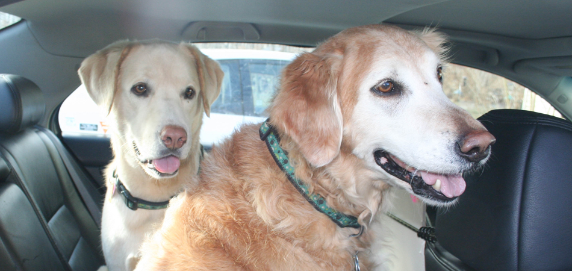
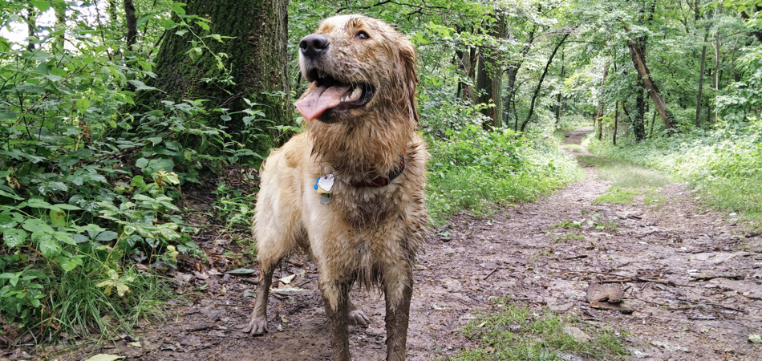
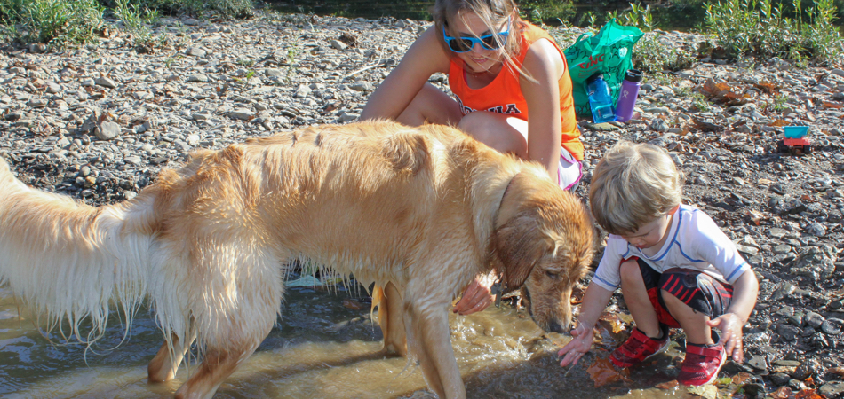
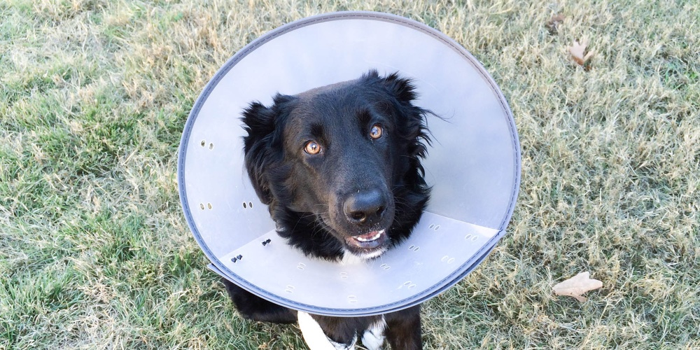

Adding a dog to your family can be an exciting prospect, one that should be well thought out before bringing a puppy home. There are many things to consider that will make this transition easier for both you and your new dog.
Not all apartments allow dogs. Before bringing a dog home make sure you understand any regulations and costs associated with pet ownership. Some apartments have size restrictions for dogs or charge pet owners an additional fee. If dogs are allowed, realize some dogs are happier with apartment life than others. Think about where you will walk your dog and how much exercise a dog would need before making a commitment.
Your home will also be your dog’s home. If you are planning a move, it might be a good idea to wait before bringing a dog home. Dogs grow accustomed to their environment much the same as people and changing that can present challenges for a new dog. Moving means finding a new vet, new pet sitter as well as adjusting to a new home. In addition to these considerations, not all landlords allow dogs and many have size, breed and weight constraints. Before bringing a dog home or moving you must make sure your home is compatible with a dog. Bringing a dog home for a few days and then returning it after learning you can’t have a dog in your home or the home you are moving to can be extremely damaging to the dog.
A new dog, especially a puppy, is a commitment which will require your time and attention. Consider your work hours and how much time you plan to travel as well as how busy you are with other activities. Neither a new dog or a puppy like to be left alone for long periods of time. There are solutions, but having a plan in place is a good way to begin.
Having a dog walker, dog daycare or someone to stop by to check on your dog are good options if you work long hours. Even if you don’t normally work long hours, having a dog walker or friend on call is a good idea in case of a late night at work. Traveling with a dog is possible but requires planning and can be stressful for your pet. Not all hotels and campgrounds allow dogs. If you expect to travel with your dog make sure you plan ahead and find places your dog can stay. If you choose to leave your dog at home finding a good kennel or dog sitter is a good option.
All puppies come with a few bad habits. First and foremost puppies chew, chew furniture, shoes and baseboards. You name it they will probably try to chew it. Puppies can be inquisitive and adventurous, be prepared to find your favorite plant unpotted or the dirty clothes dragged all over the house. They can also be scared by random sounds or actions. There are always solutions, chew toys and a safe zone where your puppy cannot get into mischief is a good place to start. Puppies also have sharp teeth and even the perfect pup will occasionally nip or bite before learning this is considered bad behavior. With the right coaching and patience, these bad habits will be short lived.
Puppies need to be trained. The time you spend training your puppy will be well spent. It is easier to enjoy a dog that is house trained, walks nicely on a leash and comes when it is called. These skills are not innate, they take time and training.

Consider your family when you are thinking about adding a puppy. Some breeds are better with children, others easily socialize with other dogs or pets and some are wonderful companions for senior citizens. There are even breeds you can consider if you are allergic to dogs.
There are costs involved with any dog you choose. Puppies need to see a veterinarian several times during their first year for shots, worming, spaying/neutering and then yearly for a wellness checkup and shots. Rabies shots must be kept up to date and are required for registering your dog with the city where you live. Dogs can get sick, just like people and this may also require a visit to the vet and medication. Beyond this dogs need food, toys, a leash and collar. If you are crate training a crate will need to be purchased. Additional items you may need are dog gates to keep your dog out of specific areas, bedding whether purchased or an old blanket and a dog tag. The cost of fencing your yard or a play space for your dog could be important if is difficult to walk your dog every time they need out.
Sometimes it is impossible to know if your dog will have health issues. Make sure you are prepared, and can afford to deal with health issues that may arise. Have a contingency plan for what to do if your dog has a serious health issue.
